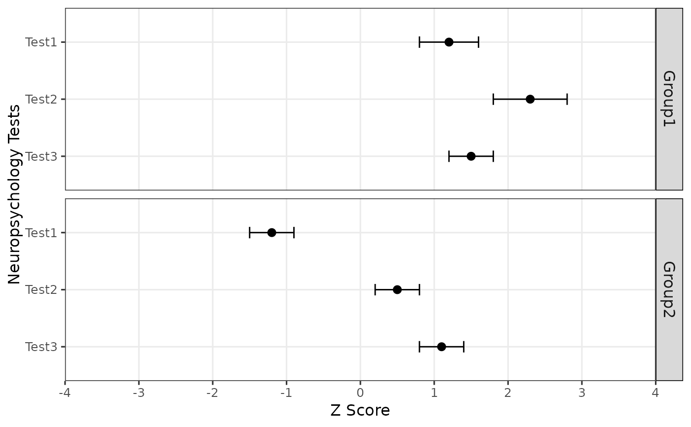

Creates a forest plot visualizing scores and their confidence intervals across different tests and groups. The plot includes optional shading and descriptors to provide additional context.
Usage
plot_forest(
data,
score,
metric = "z",
test,
group,
ci.lb,
ci.ub,
axis.label.metric = metric,
descriptors = TRUE,
shading = TRUE,
abbreviations = FALSE
)Arguments
- data
A data frame containing the data to be plotted.
- score
The column name in the data frame representing the scores to be plotted.
- metric
The metric of the scores in the data frame. Defaults to "z". The metric can be converted to "z".
- test
The column name in the data frame representing the test names.
- group
The column name in the data frame representing the group names.
- ci.lb
(Optional) The column name in the data frame representing the lower bound of the confidence interval.
- ci.ub
(Optional) The column name in the data frame representing the upper bound of the confidence interval.
- axis.label.metric
The metric to be used for axis labels. Defaults to the value of
metric. Can be "percentile", "t", "index", "scaled", or "z".- descriptors
(Optional) Logical value indicating whether to include descriptive labels on the plot. Defaults to TRUE.
- shading
(Optional) Logical value indicating whether to include shading on the plot for the average range. Defaults to TRUE.
- abbreviations
(Optional) Logical value indicating whether to abbreviate test names. Defaults to FALSE.
Examples
# Example data frame
df <- data.frame(
test = rep(c("Test1", "Test2", "Test3"), 2),
group = rep(c("Group1", "Group2"), each = 3),
score = c(1.2, 2.3, 1.5, -1.2, 0.5, 1.1),
ci.lb = c(0.8, 1.8, 1.2, -1.5, 0.2, 0.8),
ci.ub = c(1.6, 2.8, 1.8, -0.9, 0.8, 1.4)
)
# Plot with default settings
plot_forest(df, score = score, test = test, group = group, ci.lb = ci.lb,
ci.ub = ci.ub)
# Plot with no descriptors and shading
plot_forest(df, score = score, test = test, group = group, ci.lb = ci.lb,
ci.ub = ci.ub, descriptors = FALSE, shading = FALSE)
